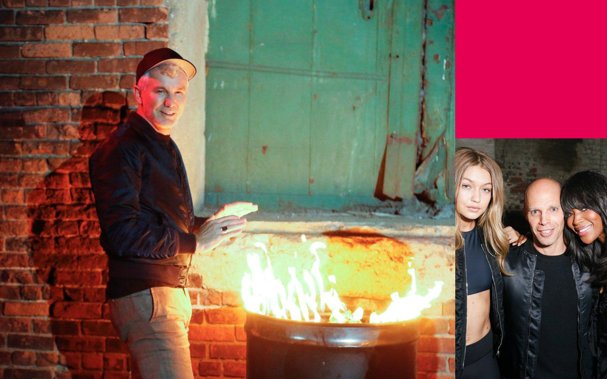
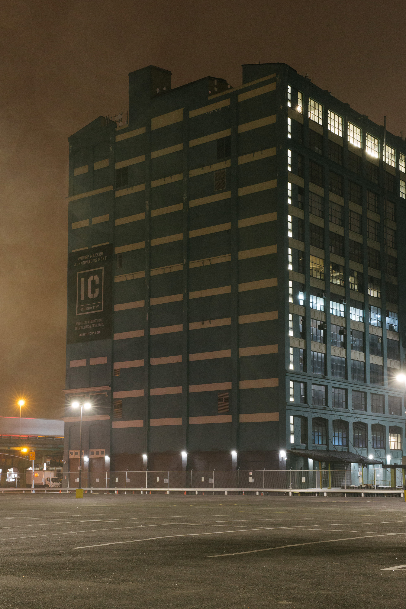
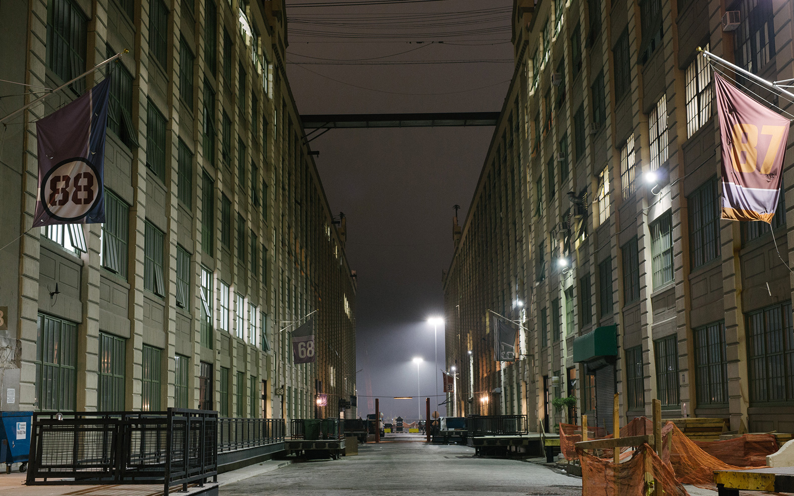
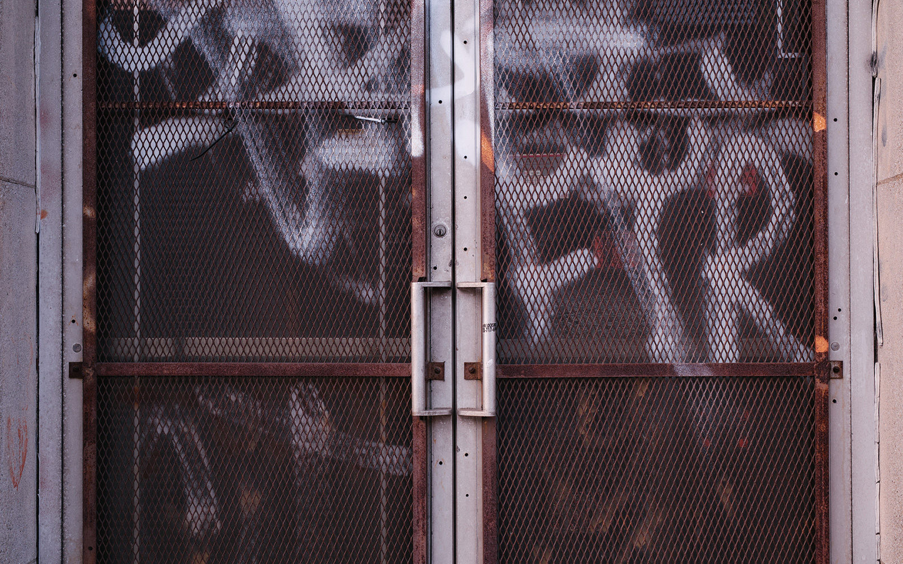
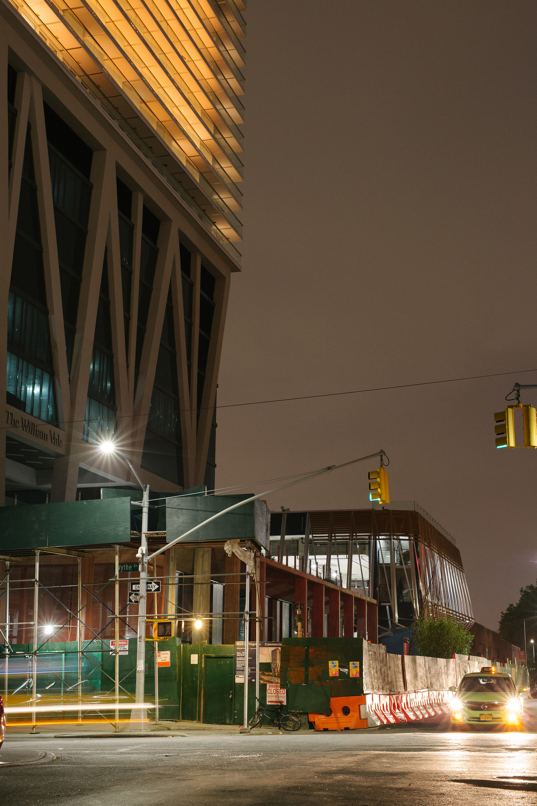
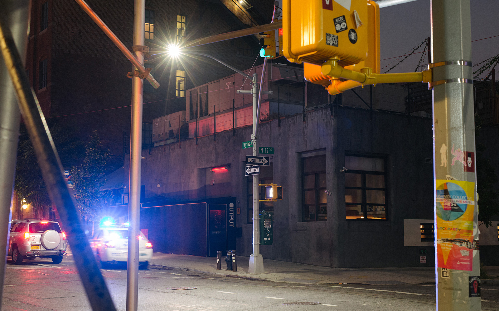
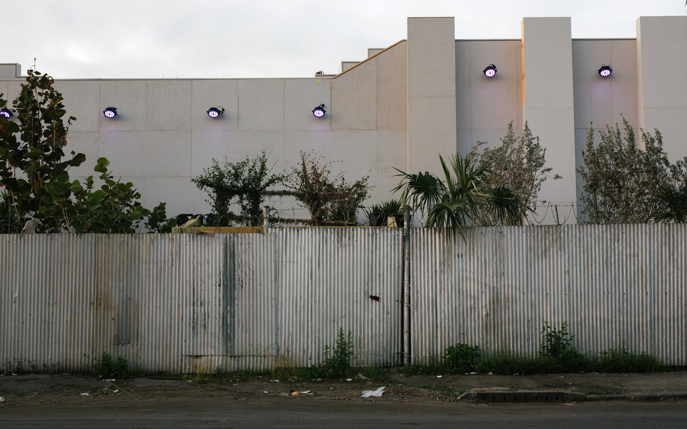
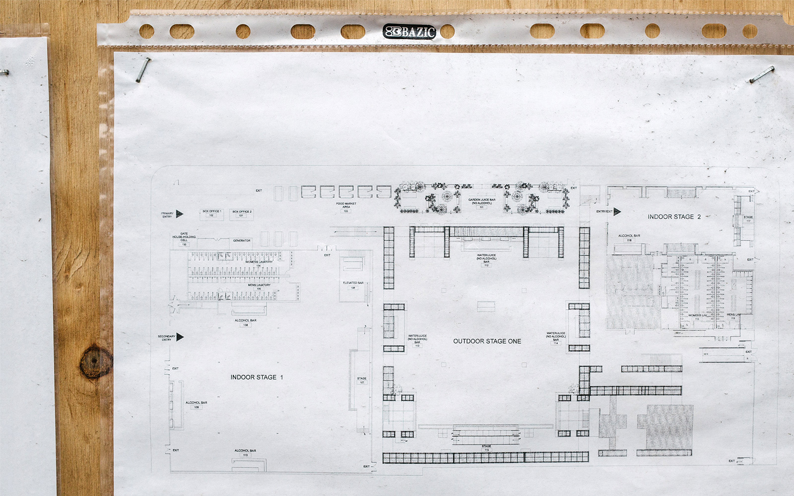
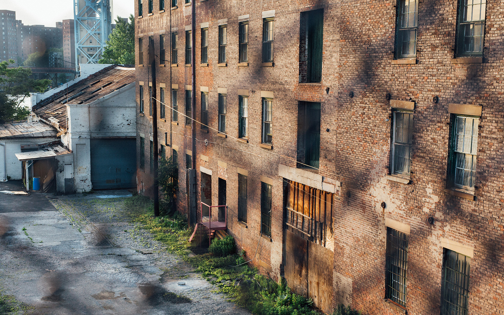
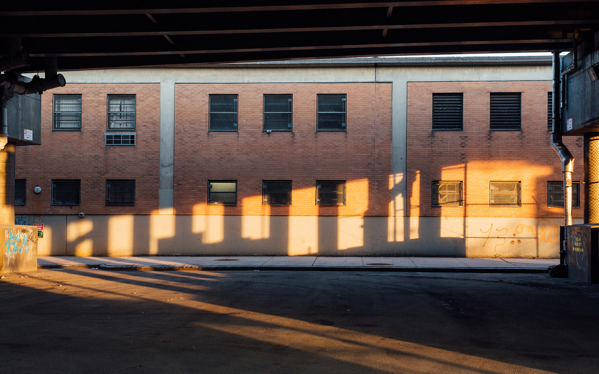

Real estate, gentrification and nightlife in New York
by Max Pearl
Party promoters in New York are part of a complex game that most don't even know they're playing. Max Pearl reports on how property developers and gentrification are irreversibly shaping the city's dance music scene.
Last Halloween, two real estate developers, an art dealer and a famous artist threw a warehouse party in New York. The setting: Mott Haven, a Bronx neighborhood where half the population lives below the poverty line. The theme: "The Bronx Is Burning," a reference to the 1970s, the darkest period in the borough's history, when entire city blocks literally burned down because of government neglect and abandonment.
The one percenters of New York fashion and art took selfies with poverty-themed decor: cars riddled with bullet holes and garbage can fires. Naomi Campbell was there. So were Kendall Jenner and Adrien Brody. The music was provided by Brooklyn techno hero Frankie Bones, known for his Storm Rave parties in the '90s, and Kool Herc, the Jamaican-born, Bronx-bred DJ who more or less invented hip-hop.
"We're developing about 2,000 apartments along the waterfront in the South Bronx," said Keith Rubenstein, head of Somerset Partners, the real estate investment firm that funded the event. He spoke to a reporter from Women's Wear Daily while models mingled around him. "Tonight is an amazing opportunity to introduce a whole new world to the South Bronx, and celebrate its heritage."
The media descended on the event's organizers for the tone-deaf concept. "Trivializing legitimate community concerns is not welcome," tweeted City Council Speaker Melissa Mark-Viverito. "Neither are attempts to erase the neighborhood's culture and history." Others took issue with the billboard that had gone up the week before, which rebranded Mott Haven as the "Piano District," a nod to the piano factories that once stood nearby. There was even a hashtag, #WhatPianoDistrict, where locals took shots at developers for trying to manipulate the neighborhood's image.
But there was something else unsettling about this episode. What looked like a regular warehouse party was actually a tool to push gentrification into overdrive. This may seem like a bizarre one-off in the history of New York real estate ploys, but nightlife and gentrification have a complicated history in the Big Apple, and it isn't always easy to tell the victim from the perpetrator. Clubs and venues often drive the first waves of gentrification in New York City. They're also victims of their own success—casualties of rising rents and demographic shifts that come with a neighborhood's heightened profile. Like most New York transplants, they're caught up in a cycle that often feels out of their control. As they're priced out of central neighborhoods, they can inadvertently become complicit in pushing poorer people farther into the margins of the city.
Mister Sunday is the outdoor disco run by much-loved local DJs Eamon Harkin and Justin Carter, who also run the label Mister Saturday Night. The weekly summertime series began at a scrappy lot in Gowanus, Brooklyn, an industrial zone by a canal that once carried cargo ships in and out of the New York harbor. Everyone from Caribou to Omar-S came to play under the disco ball they'd hung in a circle of trees lining the dance floor.
Harkin and Carter eventually got kicked out by condo developers. By 2018, what was once Gowanus Grove will be a 700-unit complex offering "24-hour concierge doormen," "valet service," an "outdoor pool" and "fitness centers with yoga studios and spin rooms." Thankfully they had contacts at another outdoor venue—a bigger and better one. The only issue was it was kind of in the middle of nowhere.
"I have a friend who had just gotten hired at Industry City," Carter told me over the phone from Tokyo, where he and Harkin had spent the week DJing. "She said, 'Hey, we've got this courtyard.' And I was like, 'I know that courtyard!'" Industry City, formerly known as Bush Terminal, is a sprawling post-industrial complex on the South Brooklyn waterfront, about a 30-minute drive away from Midtown Manhattan. It sits on the other side of the highway from Sunset Park, a residential neighborhood of mostly working class immigrants.
With no angry neighbors and space for hundreds of people, the courtyard was perfect for Carter and Harkin. It was perfect for the owners too, who had spent the last decade trying, and failing, to pack these buildings with tenants who would pay good money for space in the complex. By then, business had started to pick up and they'd attracted a number of small businesses: tech startups, a small-batch pickle brand, a craft distillery, design workshops.
 Unlike other parties, Mister Sunday's crowd isn't just young ravers. It includes hip professionals and families looking for a place where they can bring their toddlers to the dance floor. They also happen to be ideal potential tenants for Industry City, upwardly mobile creative types who might move their businesses there someday.
"Parties like Mister Sunday, along with upscale flea markets, artisanal food events like Smorgasburg, and art events have long signaled the coming wave of gentrification to once-crumbling industrial backwaters," wrote journalist Erica Berger in a 2014 Fast Company article called "Gentrification, Inc." Berger speculated on the spill-over effect that Industry City might have on the rent prices in nearby Sunset Park, which ranked among the city's top 15 gentrifying neighborhoods in a report from NYU in March.
Local community organizers say they're already feeling it. "Definitely we've seen a surge in harassment on the part of property owners trying to get immigrants out of their rent stabilized apartments," said Marcela Mitaynes of the housing advocacy group Neighbors Helping Neighbors, in an interview with City Limits. "Baseless lawsuits, withholding repairs and maintenance."
This isn't the first time developers have leveraged musicians and artists to increase the value of their holdings. "A hip, young set willing to push the boundaries into once-unloved neighborhoods" is an essential part of the "equation of gentrification," Berger pointed out. "But so are the savvy real-estate developers who follow their every move, ready to pour accelerant on the process."
For as long as the term "gentrification" has existed, landlords have used culture to upsell New York neighborhoods. A 2007 New York Times profile of one Lower East Side developer, Sion Misrahi, shows how effective that strategy can be. He didn't beat around the bush: "We decided to rent to bars and restaurants who would bring in the hipsters and change the neighborhood." It's rare to hear developers speak so candidly about these kinds of tactics on the record, though it's a familiar narrative in most American cities.
At the time, Misrahi worked as a consultant for building owners in the area. He encouraged them to rent storefronts to edgy tenants who would increase the area's cultural cache—bars, dance clubs, a performance space specializing in burlesque. He even persuaded one landlord to offer a 10% discount to a sex-toy shop and leather fetish boutique. "He literally gentrified the neighborhood over many years," that landlord explained in the same article. "To do that, he carefully considered every tenant that he arranged with the building owners. Orchard Street had been a conservative shopping area, but now it has become more spicy."
NIn the 1980s, landlords used the same tactic in the nearby East Village, though with painters instead of nightclubs and sex shops. In her 2012 book The Gentrification Of Nightlife And The Right To The City, York University professor Laam Hae made those connections clear.
"The gentrification of the East Village explicitly hinged on the aesthetics and ambience that the neighborhood's counter-cultural and bohemian artists had created [during] the 1960s and 1970s," she wrote. "The media's attention to this [movement] gradually changed the popular picture of the neighborhood from low and marginal to central and interesting."
Clubs often perform the same function, she said: "Thriving nightlife has ushered in and even constituted an essential part of the revitalization of neighborhoods." Her research showed that nightlife can "revalorize depressed property and trigger gentrification, enabling landlords and real-estate investors to reap 'monopoly rent.'"
Developers often benefit from the buzz that hip nightclubs generate for down-and-out neighborhoods. But Hae argues that when new, upmarket tenants move in and start complaining, they side against nightlife. This tends to be their outlook on the arts as well. "Municipalities [sponsored] workshops and housing subsidies as an anchor for future real estate capital investment in dilapidated neighborhoods," she explained. "Later [they] removed the subsidies to relocate artists elsewhere once gentrification kicks in."
It's tough to draw a causal relationship between vibrant nightlife and displaced communities. But plenty of real estate players in the last 40 years have tried to harness music scenes as part of their development plans. And plenty of cultural creators are concerned with the role they play in helping gentrification along.
"If you're running a DIY space, you're often bringing people to a neighborhood that they wouldn't come to otherwise," Joe Salina said over the phone from his Babycastles headquarters in Chelsea. The collective, which puts on art shows and electronic music events, grew out of the original Silent Barn location in Ridgewood, Queens. It later moved to the Williamsburg warehouse venue 285 Kent, which was replaced by the Vice Media headquarters in 2014. "You end up influencing their associations with that place, and influencing the fact of them wanting to be there," he said.
A DIY space is a fully or partially unlicensed venue. They range from warehouses to suburban basements to churches and community centers. In New York, the DIY movement grew from punk and indie rock. It peaked in the mid-2000s with a huge proliferation of unlicensed venues run by young artists who wanted to take the scene into their own hands. By the time it closed in 2013, 285 Kent was the crown jewel in a network of lousy but much-loved informal Brooklyn venues. It hosted club nights with respected promoters like The Bunker, Mutual Dreaming and Lit City.
These venues tend to avoid scrutiny by congregating on the city fringes. They are often the first signs of art school kids moving into low-income or post-industrial neighborhoods. They are also among the first to be displaced by rising rents and upmarket neighbors who are more likely to file noise complaints. "With DIY spaces, there's a life span to what we do," Salina said. "Most of them don't open with an idea that they'll be there forever. Because one day you're going to end up getting priced out. Maybe partially because of the things you're doing in that neighborhood."
 "What you want to do is own buildings near the nightlife stuff that you put in place," said Jamie Wiseman, co-founder of Cayuga Capital Management. His company purchased the building that houses Brooklyn nightclub Output for $1.6 million in December of 2012, then flipped it to another owner for $7.4 million only 18 months later. "Take the Wythe Hotel for example"—the boutique hotel two blocks from Output. "They built this beautiful thing and then everything around them went way up in value."
Cayuga owns developments in fast-gentrifying areas of Brooklyn, including the block of post-industrial buildings in between Output and its neighboring nightclub Verboten. Their specialty is identifying economically depressed neighborhoods that are on the cusp of becoming desirable.
"We typically look for areas that have experienced some sort of decay and decline, to the point where there's a renaissance that can occur," Wiseman said over the phone from his office. "We wouldn't look at a place like Brooklyn Heights because it was always nice and never had a hard time. Bushwick, however, had a really hard time. Williamsburg had it really tough." Cayuga tends to begin developing neighborhoods early on in the gentrification process, when other investors might find it too risky. An area's cultural cache is among the factors that help them decide where to put their money.
"Do we look for places where people who are creatively-inclined want to be? Yes. Do we look for the creative class? Yes," he said. "By the time the finance guys show up, it's not really fun to be an investor there anymore." While he says that clubs can be risky investments because of the volatile nature of nightlife, they can also play a key role in "activating an area."
"When you're developing an area initially—when it's converting from manufacturing into retail or nightlife or office or residential—the leading groups tend to be musicians and squatting artists. Then come the bars and restaurants, which leads to galleries, nightlife and pop-up venues, etc. It all follows a predictable pattern." For him, nightlife isn't the most important barometer of when it's time to invest in a neighborhood; it's one of many factors that sweeten the deal.
So is something like Mister Sunday an effective way of drawing new tenants to a neighborhood? "No," he said—not without other considerations like public transportation. But it also can't hurt. "Do you know how long it takes to get to Industry City? It's a fucking nightmare. Of course they're giving the space away, because nobody wants to be there."
Mister Sunday's organizers said goodbye to Industry City this year. They relocated to Nowadays, a backyard bar that the duo opened last summer in Ridgewood, Queens. It took two years to find a place that would satisfy all of the bureaucratic requirements, and another two years to build and get everything up to code. The plot of land they picked is ideal because it's next to a manufacturing zone, meaning it can legally host music and dancing (and it doesn't have too many neighbors).
It's also within their budget, presumably for a few different reasons. It's in the middle of a blighted post-industrial strip; it's 11 subway stops from Manhattan; and it's two blocks down from what the New Yorker called "the most radioactive place in New York City." According to a 2014 investigation, Nowadays is only a few dozen feet from the former site of the Wolff-Alport Chemical Company, who, in the first half of the 20th century, had a habit of dumping radioactive thorium into the sewers.
The Environmental Protection Agency tested the soil to prove that it's radiation-free. But consider the context and a pattern begins to emerge: Mister Sunday's first home was an empty lot next to the notoriously stinky Gowanus Canal. When that got flipped for condos, they moved to a far-flung industrial complex next to an elevated highway. Now they've got their own bar but they've had to go through hell just to get it off the ground. Even one of the city's most beloved musical institutions has to pick from the scraps.
That's not just because of rent prices, but because of the city's unusual laws about dancing. "If you really want to be legal to have dancing―to have a cabaret license―you've gotta be in a manufacturing zone," said Justin Carter. Bar owners in New York need a specific license if they expect to have three people or more dancing at the same time. Otherwise they face fines and suspensions that could bring an end to more modest operations.


It's a strange (and, some say, unconstitutional) piece of legislature that was created during the Prohibition era as a means to stem the proliferation of speakeasies and jazz clubs. The law languished in obscurity during the second half of the 20th century, but in the late '80s, as the city emerged from a recession and a crime wave, they began to toughen up their stance on nightlife. In 1990, the City Planning Committee made a series of key revisions to the cabaret law that specifically targeted dance clubs, which were seen as a nuisance in gentrifying neighborhoods like SoHo, TriBeCa and the East Village.
With these new changes, cabarets (as dancing establishments are referred to in legal terms) would no longer be allowed in residential zones without a special permit. The result was they began clustering in manufacturing zones like West Chelsea, a derelict post-industrial strip along the Hudson River in Manhattan. "[It] was one of the few places in Manhattan that had not yet been developed in earnest," writes Laam Hae. That made it "one of the few areas left [for] social dancing businesses after the 1990 rezoning of the cabaret law."
New York nightlife took an even bigger hit when Mayor Rudolph Giuliani took office. Viewed as a hero by some and a tyrant by others, Giuliani is often credited with pulling the city out of its Dark Age. When he was elected in 1994, New York was a scary place to be―there were almost 2,000 murders in 1993 (compared to 350 in 2015) and over 12,000 motor vehicle thefts. Much of that was tied to the crack epidemic that blew through the city from the early '80s to the mid-'90s.
Two of Giuliani's main goals were to make New York City a booming hub for business and to improve the overall quality of life on its streets. His solution for the latter was to get tough on small crimes―things like public urination, public intoxication, panhandling, squatting, noise complaints and, of course, nuisances related to the city's world-famous nightlife. His policy grew from a piece of pop sociology known as the "broken windows theory," the idea being that if a building has a window knocked out, it invites bad guys to knock out the rest of them (or worse).
Giuliani was hard on nightclubs. He created task forces that not only distributed fines for licensing violations, but also enforced new standards for building safety. Narcotics officers raided iconic clubs like Limelight and Tunnel, which were like open-air drug markets at the time. Peter Gatien, the former owner of both establishments and "fallen nightclub king of New York's under-25 world," as a 1996 New York Times article called him, was indicted after DEA agents bought drugs at his clubs with the help of an informer.
"What happened with Giuliani, we still feel the repercussions of that," Carter said. Not only have clubs moved farther into the margins, but they've become increasingly complicated and costly businesses to operate. "Imagine you're 23. You're fresh out of college and you just want to throw parties," he continued. "How do you ever wrap your head around Cabaret Laws, Department Of Buildings regulations, Department Of Health regulations, State Liquor Authority regulations, Consumer Affairs regulations? The barrier to entry is so high.
"When I first started throwing parties 15 years ago, we were using lofts where people were living in these little cubby holes behind the bar," Carter said, laughing. "I had no idea about FDNY, DOB or SLA regulations. I just wanted to throw a party!
The one-two punch of high rents and dense regulations means community-based projects are often pushed to the margins. Or they're forced to strike up morally ambiguous deals with the city's gatekeepers, as was the case with Mister Sunday. "It's hard to remember how I thought about the relationship with the property developer," Carter told me. "Mainly, our thought was, 'We need a place to throw our party.'"
He and Harken took issue with the way they were portrayed in the Fast Company article, which framed them as pawns in a real estate developer's scheme. "We weren't some naive DJs who were unaware of the value we brought to their brand," Harkin said. In his view, the author ignored all of the good things that Industry City and Mister Sunday brought to the area. "There are many interesting stories of other businesses doing very cool things at Industry City that are creating jobs in a way that is meaningfully contributing to the local economy."
Carter sounded a little uneasy when I asked him if he felt like they were used for someone else's hidden agenda. "It became clear," he explained, "that when Industry City would bring prospective tenants to walk through the space, Mister Sunday was a huge selling point for them. We wouldn't have predicted that."
Joe Salina from Babycastles compared the situation to corporate sponsorship. With New York's high prices and tough logistics, artists must often ask themselves: can I afford to say no to that Red Bull check? "These days there are more considerations or compromises you have to think about," he said. "I see people doing stuff like Red Bull Music Academy, and maybe 15 years ago I would have been like, 'What's up with that? Why would you do that?' But these days I'm just like, 'Good for you. Get paid.'"
The DIY model is still viable in hidden corners of the New York music scene. But dance music especially—with its late nights, loudness and reputation for illicit activities—makes it difficult to run these events under the table. "You can't just do it with no thought to permits or making sure your space is safe," Salina said. "You can't just go into a space and be like, 'OK we're gonna have a crazy party, then everybody will clear out and that's the end of it.' It doesn't work that way anymore."
"It's not like it used to be," said Jamie Wiseman on his experiences at New York clubs in the '90s. "It used to be guys who were just playing records and doing the lights themselves and throwing parties. They'd open a club for a total of $50,000." Now, the only people with a shot are well-funded entrepreneurs with legal expertise and connections to city and state government.
American electronic music is professionalizing. This is clear at every level of the industry, from the proliferation of commercial EDM venues in Las Vegas to the rise of boutique travel agencies that organize top-shelf trips to festivals. In New York, corporate brands like Hennessy have marketed their VIP promotional events as "warehouse raves." Big-budget event promoters have priced out smaller, DIY events by raising the expectations for what building owners can charge to rent.
This is also clear if you look at the venues themselves. Take Bushwick for instance, the fast-gentrifying Brooklyn neighborhood that's hosted much of the city's clandestine nightlife for the last five years. One particular post-industrial zone near the Williamsburg border is now attracting the attention of real estate professionals and nightlife entrepreneurs. Its first fully licensed, permitted venue opened last summer in a 53,000 square-foot former manufacturing facility at 99 Scott Avenue.
The Brooklyn Mirage, which has a large security staff and even stations a police detail at its entrance, initially opened as a pop-up venue that ran from July to September. It booked some of the biggest DJs in house and techno—Dixon, Âme, Nicole Moudaber, Tale Of Us and M.A.N.D.Y., to name a few. These events have enormous budgets compared to their underground counterparts, often with huge production and numerous international artists on the lineup.
The Brooklyn Mirage reopened in a new spot last month—developers have even bigger plans for its old location. Last September, the building's owner, Bushwack Capital, borrowed $6.75 million from investors to turn 99 Scott Avenue into a restaurant, beer garden and winery with additional office space, says Real Estate Weekly. In response to noise complaints related to the Brooklyn Mirage, Bushwack Capital told the local community board that the building would no longer host large electronic music events. "Our goal is not to be a huge nightclub destination or a place where there's a lot of drinking and stuff like that going on," managing partner Dawson Stellberger told the Brooklyn Paper. (Bushwack Capital didn't respond to my request for comment on the new development.)
Now community-based nightlife must compete with retail, offices and, increasingly, upscale nightclubs for space in the city's few remaining manufacturing zones. Not to mention actual manufacturing jobs. "The back-and-forth that we had most recently with the local community board was actually about manufacturing jobs," Carter said. "They told us, 'You're a good operator and we're happy to have you around. But we have a problem with your kind of use in a manufacturing zone. We believe that manufacturing zones should be used for manufacturing. We want a city with manufacturing jobs for the middle class."
New York City has a housing crisis. For the last decade, its administration has had to find ways of addressing the enormous influx of new people—almost 80,000 a year. The real estate bubble is so inflated that new arrivals are often driven to the neglected corners of the city, places that are now transitioning from manufacturing to residential. Brooklyn—once the fifth most productive industrial area in the country, according to real estate site Curbed—saw 40% of its manufacturing rezoned during the last mayor's administration.
"All of a sudden you've got nightlife competing with traditional manufacturing jobs," Carter continued. "And by no means do I want that taken away from us, because if we can't go into residential areas and we can't have manufacturing areas, then where do we go?"
An article from The Guardian had a similar question: "How far can New York's club scene move before it dies?" "The clubs have moved deeper into the borough," journalist Whitney Wei wrote. "[There's] Palisades, on the perimeter of Bed-Stuy; or the Bossa Nova Civic Club, which pumps house and techno from its smoky tropical recesses beneath a subway overpass in Bushwick. Nightlife venues are claiming the city's fringes, as their predecessors are priced out of what were once industrial deserts."
As they're forced deeper into Brooklyn, Queens and the Bronx, they may bring higher rents with them. "Everyone is kind of a victim and a perpetrator, except for the poorest," said Peter Moskowitz, a journalist whose forthcoming book, How To Kill A City, addresses the history of gentrification in New York City. We spoke over coffee at his studio in Bushwick, a few blocks from the new Brooklyn Mirage. "If Mister Sunday could afford to be in prime Williamsburg or Manhattan they would probably do that. But because everyone gets pushed down this ladder, they're pushing other people down, too—and participating in this scheme that they don't necessarily want to be a part of."
I asked him what he thought of developers using party culture to push gentrification along. "People are having to come up with more and more unique ways of milking real estate value, because it's already so high," he explained. "Gentrification is an inherent feature of late-stage capitalism in the US where real estate is one of the only industries left to produce profit." With a market that's so saturated, developers don't even need to wait for starving artists and squats to initiate the first few waves of gentrification. "You can just go from zero to boutique, or from zero to condo. You don't even need the intermediary anymore."
 So is New York nightlife responsible for its own demise? He answered me with an anecdote from urbanist Jane Jacobs' seminal book The Death And Life Of Great American Cities. She wrote
"[There's] a family I know who bought an acre in the country on which to build a house. For many years, while they lacked the money to build, they visited the site regularly and picnicked on a knoll, the site's most attractive feature. They liked so much to visualize themselves as always there, that when they finally built they put the house on the knoll. But then the knoll was gone. Somehow they had not realized they would destroy it and lose it by supplanting it with themselves."
"It's hard to claim that nightclubs directly cause the gentrification that ultimately displaces them," said Luis Manuel-Garcia, a longtime RA contributor and researcher whose writing deals with the cultural and economic context surrounding Berlin's techno scene. "But certainly the property investors and upscale businesses that do drive gentrification often include nightlife venues as part of the 'cultural offer' that makes an up-and-coming neighborhood attractive—even if they don't want one next door to their rehabbed loft or upscale pastry shop."
Nightlife has done wonders for New York's image. From the Harlem Renaissance to the Paradise Garage to the rave scenes in Larry Clark's Kids, images of the Big Apple after dark are hard-wired into the city's mythology. But grassroots nightlife doesn't tend to get the support it needs from the government; if anything it's becoming increasingly difficult to compete with more profit-oriented businesses. What could New York do to address this? There are few easy answers, but Carter says New York should follow the lead set by cities like Amsterdam, where they've appointed an ambassador to help the nightlife industry and the city understand each other. "We need somebody who gets a seat at the table when there are zoning conversations, somebody who gets to have audience with the mayor and the City Council, who could be a voice for nightlife," he said. "Because then you'd have a way to start the conversation, a way to say, 'Hey. Nightlife has value in a city.' That would be a really good start."